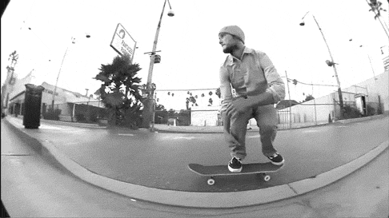

Kick your front foot up and foward to stabalize the board.
Push both feet towards the ground with the board (hopefully) beneath them.
Ride away!

Nollie vs Ollie
Nollies are done the same way as Ollies however, the jump
is performed on the front of the board.This means the roles of the front and back feet
become reversed.